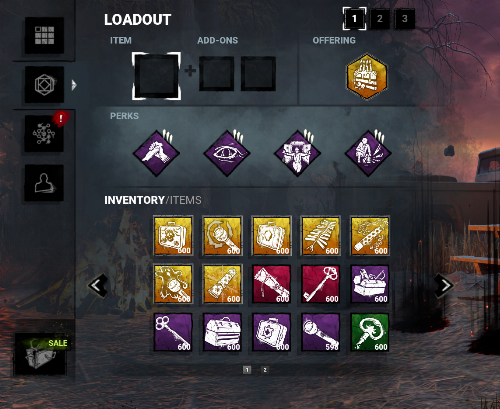
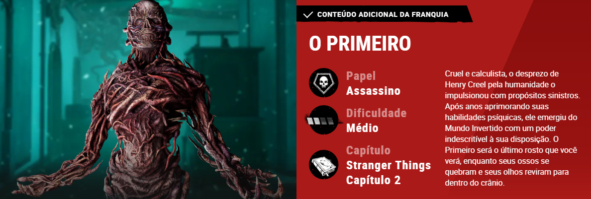
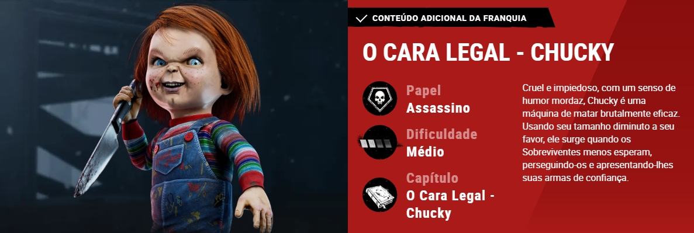
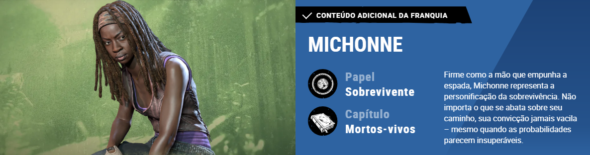
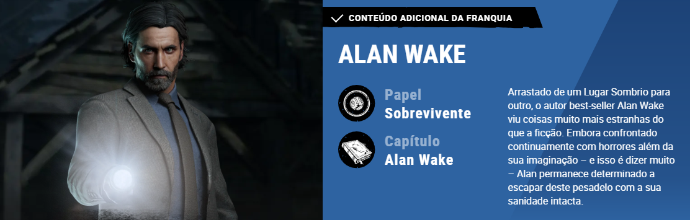

Sobre o Jogo
Dead by Daylight é um jogo eletrônico multijogador online assimétrico do gênero survival horror desenvolvido pelo estúdio canadense Behaviour Interactive. O jogo é jogado em um modo um contra quatro, onde um jogador assume o papel de um assassino, e os outros quatro jogam como sobreviventes, tendo que escapar do assassino e reparando cinco geradores para abrir os portões de saída e evitarem de serem capturados, enganchados e sacrificados.

Recusrsos Principais Dos Sobreviventes
- Caixas de Ferramentas: Usadas para reparar geradores mais rápido.)
- Lanternas: Usadas para salvar sobreviventes e cegar o assassino.
- Medkits: Cura rápida.
- Frasco de Névoa: Novo item com alto potencial de evasão.

Tabela de killers e Sobreviventes
| Elemento | Função |
|---|---|
| O primeiro (vecna) | Killer |
| O cara legal (chucky) | Killer |
| Alan Wake | Sobrevivente |
| Michonne | Sobrevivente |



